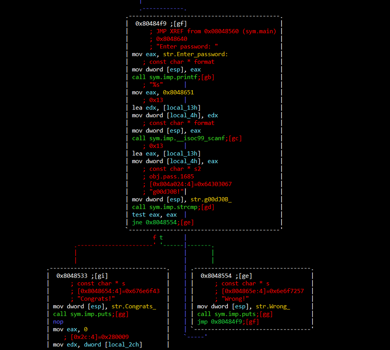
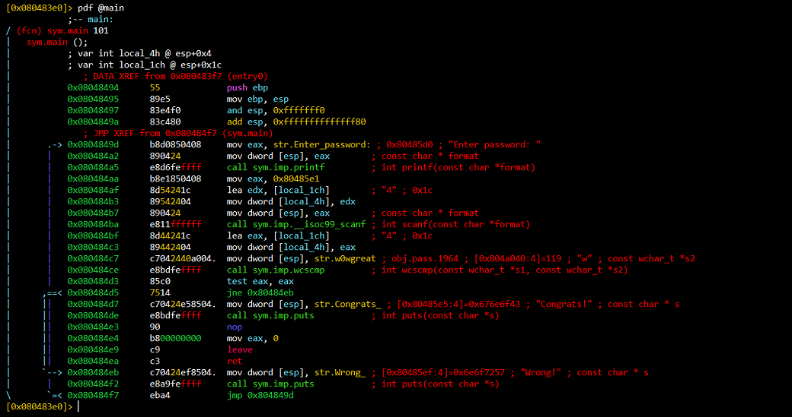
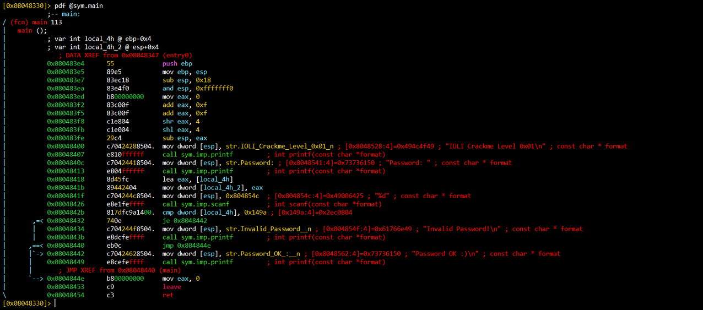
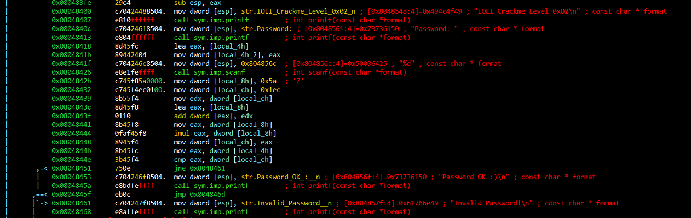
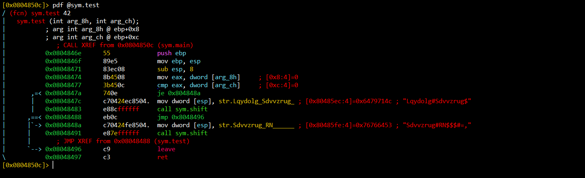
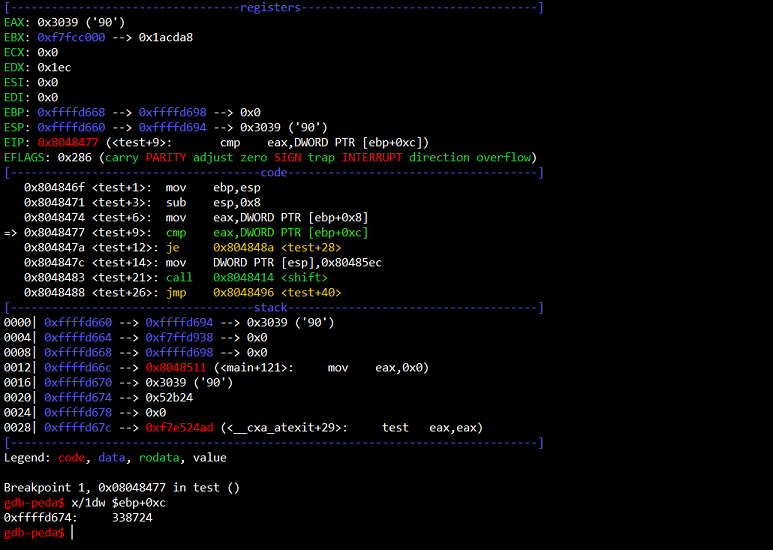
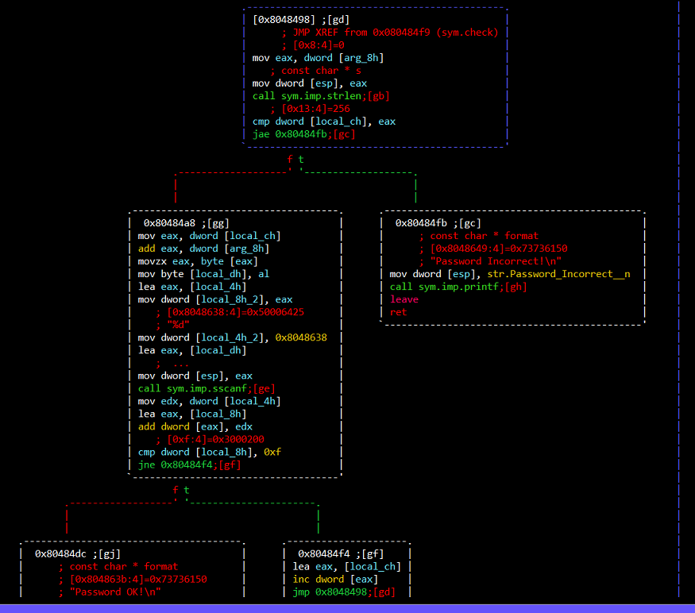
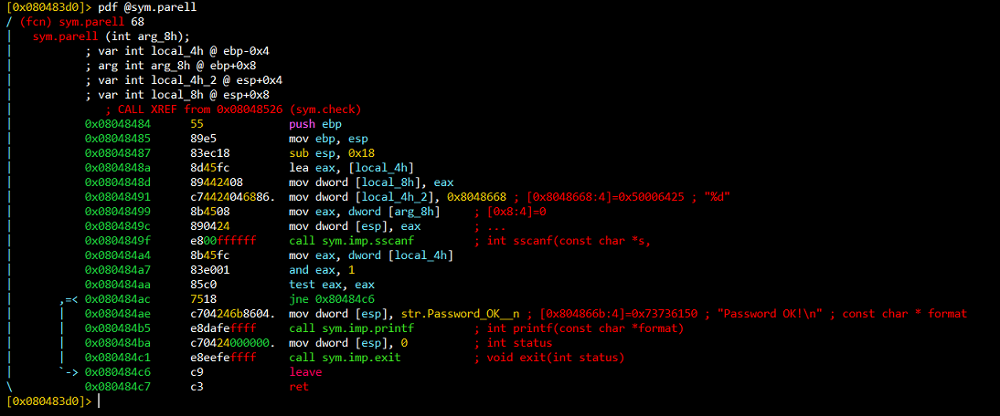
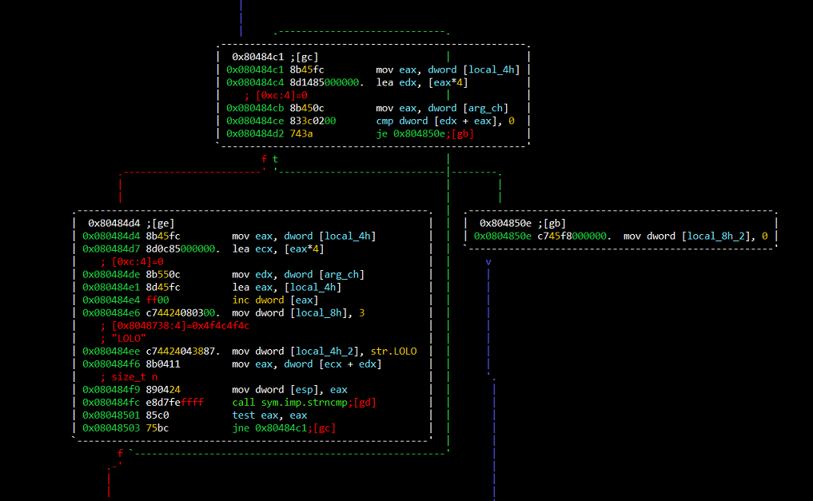
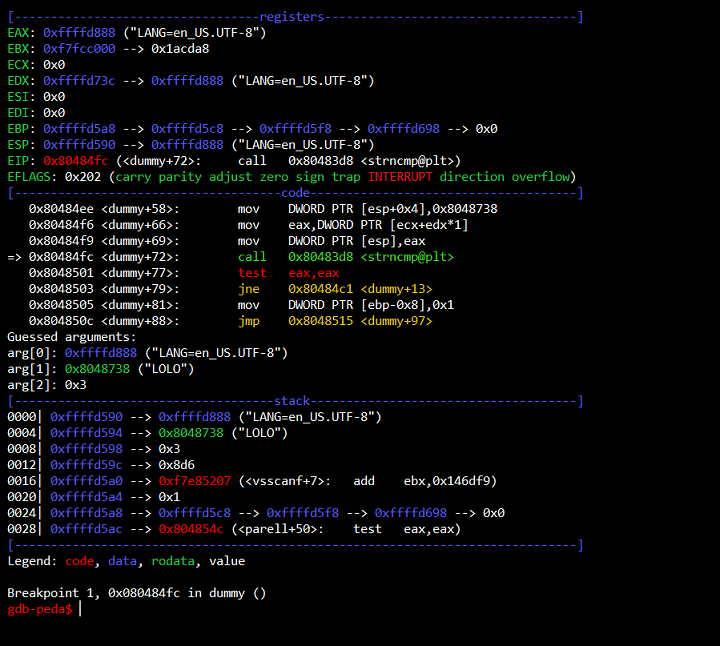

IOLI Crackmes
The problems below can be found here. A crackme is a challenge where you are given a compiled program that requires certain input to give access to a user. In order to discover what the input is, you will need to reverse engineer the application and trace what happens to the input.
Peda Installation
My first step in this process was to install peda. Peda is a Python framework for the code debugging tool GDB. GDB is an invaluable tool for reverse engineering, but it requires a lot of manual work to do useful things like displaying the contents of registers and the stack. Peda is an extension that gets added to the .gdbinit script that simplifies these functions for you, saving both time and effort.
Another tool you will need is a disassembler. A disassembler will attempt to take the machine code from the binary and display it in a more human-readable format - assembly. Some disassemblers even come packaged with a decompiler, which goes a step further and can reproduce source code! A few options available are IDA Pro, Binary Ninja, and radare2. I will be using radare2 since it is cross platform, powerful, and most importantly, free.
Once you have the problems downloaded, first make sure that you can run the binaries.
Table of Contents
- Setup
- crackme0x00a
- crackme0x00b
- crackme0x01
- crackme0x02
- crackme0x03
- crackme0x04
- crackme0x05
- crackme0x06
- crackme0x07
- crackme0x08
- Summary
Setup
Peda Installation
My first step in this process was to install peda. Peda is a Python framework for the code debugging tool GDB. GDB is an invaluable tool for reverse engineering, but it requires a lot of manual work to do useful things like displaying the contents of registers and the stack. Peda is an extension that gets added to the .gdbinit script that simplifies these functions for you, saving both time and effort.
git clone https://github.com/longld/peda.git ~/peda
echo "source ~/peda/peda.py" >> ~/.gdbinit
Another tool you will need is a disassembler. A disassembler will attempt to take the machine code from the binary and display it in a more human-readable format - assembly. Some disassemblers even come packaged with a decompiler, which goes a step further and can reproduce source code! A few options available are IDA Pro, Binary Ninja, and radare2. I will be using radare2 since it is cross platform, powerful, and most importantly, free.
git clone https://github.com/radare/radare2.git ~/radare2
cd ~/radare2
sys/install.sh
Once you have the problems downloaded, first make sure that you can run the binaries.
./crackme0x01sudo dpkg --add-architecture i386
sudo apt-get update
sudo apt-get -y install libc6:i386 libncurses5:i386 libstdc++6:i386
crackme0x00a
We start by looking at the first crackme. When we run the file, we are given a password prompt. When we input an incorrect password, the program returns by saying "Wrong!" and asks again, presumably until the user enters the right password.
$ ./crackme0x00a
Enter password: banana
Wrong!
Enter password: apple
Wrong!
Enter password:
-AAA option indicates that we want the binary to be analyzed completely for things like symbols. This isn't a default option in r2 since analyzing larger binaries can take very long, but for us it should be fine.
$ r2 crackme0x00a -AAA
[x] Analyze all flags starting with sym. and entry0 (aa)
[x] Analyze len bytes of instructions for references (aar)
[x] Analyze function calls (aac)
[x] Emulate code to find computed references (aae)
[x] Analyze consecutive function (aat)
[x] Type matching analysis for all functions (afta))unc.* functions (aan)
[x] Type matching analysis for all functions (afta)
-- Bindiff two files with '$ radiff2 /bin/true /bin/false'
[0x08048430]>
is command in r2 to list all the symbols that it found in its analysis, and then grep for the word "main". In r2, you can grep in the terminal by typing ~.
[0x08048430]> is~main
vaddr=0x080484e4 paddr=0x000004e4 ord=066 fwd=NONE sz=133 bind=GLOBAL type=FUNC name=main
vaddr=0x08048410 paddr=0x00000410 ord=006 fwd=NONE sz=16 bind=GLOBAL type=FUNC name=imp.__libc_start_main
[0x08048430]>
seek command.
[0x08048430]> s 0x080484e4
[0x080484e4]>
VV and you will see a graphical view displaying different basic blocks separated by calls or jump instructions. You can navigate the graph in the terminal by using Vim movement keys (hjkl). Of interest to us is the following:
We can clearly see that there is a call to scanf, which reads in a string from stdin. The inputted string is compared against another string, str.g00dJ0B_, by the function strcmp. If the comparison passes, the jump evaluates to false and "Congrats!" is printed. Else, we are met with a text that says "Wrong!". After the incorrect comparison, there is a loop back to the password prompt. What is the value of str.g00dJ0B_? Press q two or three times to quit graphical mode and enter iz~g00dJ0B to find that string:
[0x080484e4]> iz~g00dJ0B
vaddr=0x0804a024 paddr=0x00001024 ordinal=000 sz=9 len=8 section=.data type=ascii string=g00dJ0B!
$ ./crackme0x00a
Enter password: g00dJ0B!
Congrats!
strings crackme0x00a, but hopefully this writeup gave you an idea for how to use r2.
crackme0x00b
Running the binary results in identical behavior to the last one. This time, I open it in r2 and print the disassembly of main instead of browsing graphical mode by typing
pdf @sym.main.
We see nearly the same binary except that instead of using the strcmp function to compare two strings, this binary uses wcscmp. A quick lookup at the man page for this function shows that this function is just like strcmp except that it operates on wide character strings instead of normal character strings. The string that the input is being compared against is str.w0wgreat. Searching for that string results in the string "w0wgreat". In this case, r2 was even able to detect and accurately display wide-character strings! In IDA Pro, I had to manually do this, so this was amazing.
[0x080483e0]> iz~w0wgreat
vaddr=0x0804a040 paddr=0x00001040 ordinal=000 sz=36 len=8 section=.data type=wide32 string=w0wgreat
[0x080483e0]> q
$ ./crackme0x00b
Enter password: w0wgreat
Congrats!
crackme0x01
Now that we know the drill, let's get right into it.

This time, the inputted value is being read by scanf as an integer (the "%d" format string tells us this). What integer is our input being compared against? In the call to cmp, we see the value 149Ah. This is the same as 0x149A, or 5274 in base 10. Entering this as the password grants us access!
$ ./crackme0x01
IOLI Crackme Level 0x01
Password: 5274
Password OK :)
crackme0x02
Similar to last time, this binary takes an integer as input. However, instead of being compared against another value directly, a series of operations is performed on the other value first. We need to figure out what the final value is that's being compared against our input.

There are two ways to solve this problem - to walk through the instructions by hand to see what the operations are and compute the value manually, or to use a debugger. In our case, we will use a debugger. Using a debugger, we can just "pause" the execution of the program after the value is computed and print it out - without having to do any of the hard work of manual calculations :)
Open GDB by typing:
gdb crackme0x02
b *0x0804844E
x/1dw $ebp-0xC- - Examine the contents of memory, reading 1 decimal word.
- - Use the memory address defined by the computation $ebp-0xC
The value we get is 338724. Running the program again, we see that we are granted access! Using a debugger can be a lot easier and take a lot less time than going through instructions manually, so use this to your advantage!
crackme0x03
This time, the main function reads in our input and performs calculations, but it doesn't seem to do the actual checking to see if our input was correct - this seems to be done in a function call named test. To view this function, we can type pdf @sym.test in the shell prompt.

It looks like there's some arguments being checked before printing some text, but the text appears jumbled. That text is passed as a parameter to another function called "shift". So, we could guess that the function arguments are our input and the actual password. After the input is checked, one of the two shifted texts is printed, indicating success or failure. So, like before, let's just set a breakpoint on the cmp instruction in GDB and print out the memory location containing our mystery value.

It turns out that the value is the same as in the previous challenge, which is 338724. Using this as the password works!
crackme0x04
Opening the binary in r2, we see that the input string is sent as an argument to a function called "check". Inside the test function, we see a few different variables and basic blocks. To get a better idea of what's happening visually, I used graphical mode to see the control flow.

The first block of code that branches checks the length of the input string against some variable. At the bottom, this variable gets incremented and then the code executes at the top again. That variable is likely some kind of index, and we are probably running some kind of for-loop to execute some code as long as our index is less than the length of the string. I renamed the variable, originally "local_ch", to "index" to remember this. This can be done by typing ":" in graphical mode to bring up an integrated shell prompt, then typing
afvn local_ch indexcrackme0x05
Similar to the last problem, this binary reads in a number and sums the digits one at a time. However, there is a little more that happens - if at any point the sum hits the value 16, a function called "parell" is called.

Inside the parell function, our inputted number is read as a decimal again then bitwise-anded with 1. After this, the test instruction is called. This is just x86's way of checking if the number is even or odd. If the number was odd, then the bitwise-and with 1 would result in the value of 1, and calling the test instruction would not set the zero flag. If it was even, then the bitwise-and would result in 0, and a test instruction would set the zero flag. To get access to the path with the "Password OK!" string, we need the test instruction result to be 0 - in other words, the number must be even. So to gain access, we need to enter an integer whose digits sum to 16 at some point and is even. I chose the number 55510, and it worked!
crackme0x06
Similar to the last problem, this binary reads in a number and sums the digits one at a time. If the digits sum to 16, the function parell is called. Inside parell, we see the same code that checks to see if the input number was even, but before we get to these checks, another function called "dummy" is called. If this function returns zero, then we never get to the even number checks and the program prints "Incorrect password". So, let's check out this new function!

Inside the dummy function, a few interesting things are happening. We see a variable being incremented in the left basic block, and being checked against on the top. This seems like a loop index! So, we will rename this variable.
If the top-most basic block cmp ever results in a zero, then we simply return 0, which means we failed. So, we want to take the left path from here. But what is happening in the left path? It looks like there's some string, "LOLO". The left path seems to check if another string's first 3 bytes are the same as "LOLO". In other words, the other string's first 3 letters must be "LOL". But what is this other string? We never passed the input string to this function. Let's fire up GDB and set a breakpoint on the strcmp instruction to find out!

Looking at the string, we see something that says "LANG=en_US.UTF-8" (this string may be different for you). This is an environment variable! Could the program be looking through all the environment variables? Let's press "c" in GDB to continue executing the program to find out. The breakpoint hits again, and this time my $eax register points to a string that says "USER=vagrant" (again this may be different for you). So, we are fairly certain that the binary is iterating through the environment variables. A safe assumption at this point would be that the program is looking for an environment variable that begins with "LOL". Let's try running the binary with an environment variable like this.
$ env LOL=1 ./crackme0x06
IOLI Crackme Level 0x06
Password: 55510
Password OK!
crackme0x07
As usual, we open and analyze the binary using r2. But this time, when we call
pdf @sym.main, we get an error!
[0x08048400]> pdf @sym.main
Invalid address (sym.main)
|ERROR| Invalid command 'pdf @sym.main' (0x70)
| 0x08048415 51 push ecx
| 0x08048416 56 push esi ; void * stack_end
| 0x08048417 687d860408 push main ; 0x804867d ; "U\x89\xe5\x81\xec\x88" ; int argc
\ 0x0804841c e867ffffff call sym.imp.__libc_start_main ; int __libc_start_main(func main, int argc, char **ubp_av, func init, func fini, func rtld_fini, void *stack_end)
[0x08048400]> s 0x804867d
[0x0804867d]> pdf
/ (fcn) main 99
| main (int arg_10h);
| ; var int local_78h @ ebp-0x78
| ; arg int arg_10h @ ebp+0x10
| ; var int local_4h @ esp+0x4
| ; DATA XREF from 0x08048417 (entry0)
| 0x0804867d 55 push ebp
| 0x0804867e 89e5 mov ebp, esp
| 0x08048680 81ec88000000 sub esp, 0x88
| 0x08048686 83e4f0 and esp, 0xfffffff0
| 0x08048689 b800000000 mov eax, 0
| 0x0804868e 83c00f add eax, 0xf
| 0x08048691 83c00f add eax, 0xf
| 0x08048694 c1e804 shr eax, 4
| 0x08048697 c1e004 shl eax, 4
| 0x0804869a 29c4 sub esp, eax
| 0x0804869c c70424d98704. mov dword [esp], str.IOLI_Crackme_Level_0x07_n ; [0x80487d9:4]=0x494c4f49 ; "IOLI Crackme Level 0x07\n" ; const char * format
| 0x080486a3 e810fdffff call sym.imp.printf ; int printf(const char *format)
| 0x080486a8 c70424f28704. mov dword [esp], str.Password: ; [0x80487f2:4]=0x73736150 ; "Password: " ; const char * format
| 0x080486af e804fdffff call sym.imp.printf ; int printf(const char *format)
| 0x080486b4 8d4588 lea eax, [local_78h]
| 0x080486b7 89442404 mov dword [local_4h], eax
| 0x080486bb c70424fd8704. mov dword [esp], 0x80487fd ; [0x80487fd:4]=0x7325 ; "%s" ; const char * format
| 0x080486c2 e8d1fcffff call sym.imp.scanf ; int scanf(const char *format)
| 0x080486c7 8b4510 mov eax, dword [arg_10h] ; [0x10:4]=0x30002
| 0x080486ca 89442404 mov dword [local_4h], eax
| 0x080486ce 8d4588 lea eax, [local_78h]
| 0x080486d1 890424 mov dword [esp], eax ; const char * s
| 0x080486d4 e8e0feffff call sub.strlen_5b9 ; size_t strlen(const char *s)
| 0x080486d9 b800000000 mov eax, 0
| 0x080486de c9 leave
\ 0x080486df c3 ret
[0x0804867d]>
d new_function_name.We'll quickly notice that most of this binary is the same as the previous binary. The only difference is that in this binary, there is a counter inside "parell". If the counter gets greater than 9, the binary fails. So, as long as our password is less than 10 digits, and follows the same rules as the previous problem, we should be good to go.
$ env LOL=1 ./crackme0x07
IOLI Crackme Level 0x07
Password: 55510
Password OK!
crackme0x08
I won't go into much detail about this problem because it is literally the exact same algorithm as the previous problem. Why is it a separate challenge then? This binary is even more stripped! We can't use function names at all; instead we're greeted with esoteric functions like
fcn.080485b9.
But if you can look past this and work your way as before, then you should be all good to go.